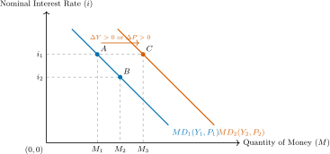
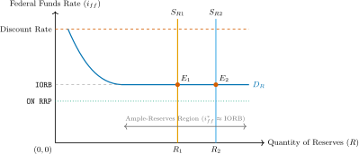
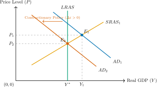
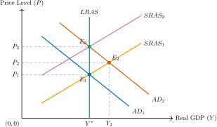

12 Ch12 Monetary Policy
12.1 The Demand for Money
Conceptual Introduction
In everyday speech, people say they ``want more money’’ when they actually mean they want higher income or greater wealth. In macroeconomics, the demand for money (\(MD\)) has a much more specific meaning: it is the portion of total financial wealth that households and firms choose to hold in liquid monetary assets—currency in circulation and checkable bank deposits—rather than in less liquid, interest-bearing assets such as Treasury bills, corporate bonds, or equity shares.
Choosing how much money to hold involves a fundamental trade-off between liquidity and opportunity cost. Money is immediately accepted for settling transactions without conversion fees or price risk, whereas bonds must be sold or matured before their proceeds can be spent. However, cash pays zero nominal interest, and checking accounts typically pay minimal interest compared to short-term government securities. Consequently, the nominal interest rate (\(i\)) on non-monetary assets represents the opportunity cost of holding money. When \(i\) rises, holding cash becomes more expensive in terms of forgone interest income, prompting households and firms to economize on cash balances and shift funds into interest-bearing accounts.
Economists group the reasons people hold money into three classic motives: [leftmargin=1.4em, itemsep=0.25em] * Transactions Motive: Households and businesses hold money to bridge the timing gap between receiving income (such as biweekly paychecks) and paying routine expenses (groceries, rent, payroll). Higher nominal spending requires larger transaction balances. * Precautionary Motive: Individuals and firms maintain liquid reserves as a buffer against unexpected expenses, medical emergencies, or sudden delays in customer payments. * Speculative (Portfolio) Motive: Investors hold money as a safe, zero-duration store of value when bond prices are expected to fall (i.e., when market interest rates are expected to rise) or when financial market volatility spikes.
Because the quantity of money demanded falls as the nominal interest rate rises (holding real income and the price level constant), the money demand curve slopes downward. By contrast, an increase in real GDP (\(Y\)) increases the volume of transactions in the economy and shifts the entire \(MD\) curve to the right. Similarly, an increase in the aggregate price level (\(P\)) means each basket of goods requires more dollars to purchase, shifting the nominal \(MD\) curve to the right in proportion to the price increase.
Visual Representation
Figure 1 illustrates the downward-sloping money demand schedule and the distinction between a movement along the curve versus a shift of the curve. At a lower nominal interest rate (\(i_2 < i_1\)), the opportunity cost of liquidity falls, causing the quantity of money demanded to increase along \(MD_1\) from \(M_1\) to \(M_2\). Conversely, if real GDP rises or the price level increases, households need more money at every interest rate, shifting the entire schedule rightward from \(MD_1\) to \(MD_2\).

Mathematical Foundation
In linear algebraic form, nominal money demand (\(MD\)) is proportional to nominal GDP (\(P \times Y\)) and negatively related to the nominal interest rate (\(i\), expressed in percentage points):
\[ MD = P \cdot (k Y - h i) \label{eq:money_demand} \]
where \(k > 0\) measures the sensitivity of real money demand to real income \(Y\), and \(h > 0\) measures the sensitivity of real money demand to the nominal interest rate \(i\). Dividing both sides by the price level \(P\) yields real money demand (\(MD/P = kY - hi\)).
Real-World Application
Financial technology continually reshapes the transactions demand for money. During the late twentieth century, the widespread adoption of Automated Teller Machines (ATMs), credit cards, and money market mutual funds allowed households to keep smaller average checking balances for any given level of income, shifting the \(MD\) curve to the left. Conversely, during episodes of acute financial uncertainty—such as March 2020 at the onset of the COVID-19 pandemic—both households and corporations aggressively drew down credit lines and accumulated liquid bank deposits ( rose by more than \(25\%\) year-over-year), representing a dramatic rightward shift in precautionary and speculative money demand.
12.2 Monetary Policy Implementation in an Ample-Reserves Regime
Conceptual Introduction
To steer interest rates across the entire economy, the Federal Reserve targets the federal funds rate ()—the overnight interest rate at which commercial banks lend reserve balances held at the Federal Reserve to one another on an uncollateralized basis. Before 2008, bank reserves were scarce, so the Federal Reserve adjusted the federal funds rate by conducting daily open market operations to slightly expand or shrink the supply of reserves along the steep portion of the bank reserve demand curve.
Following the 2008 financial crisis and the 2020 pandemic response, large-scale asset purchases expanded total reserve balances in the U.S. banking system from roughly \(\$10\text{ billion}\) to more than \(\$3\text{ trillion}\). In this modern ample-reserves regime, banks hold far more reserves than needed to meet payment clearing or regulatory liquidity buffers. Consequently, small day-to-day changes in reserve supply no longer move the federal funds rate. Instead, the Federal Reserve controls the federal funds rate directly through an administered-rate corridor built on three key policy rates: [leftmargin=1.4em, itemsep=0.25em] * Interest on Reserve Balances (): The interest rate the Federal Reserve pays commercial banks on balances kept in their master accounts at regional Federal Reserve Banks. Because any eligible bank can earn the risk-free rate overnight simply by leaving funds at the Fed, no bank will lend reserves in the federal funds market for less than . Thus, acts as the primary anchor (reservation rate) for the federal funds rate. * Overnight Reverse Repurchase Agreement () Facility Rate: Non-bank financial institutions—such as money market mutual funds and government-sponsored enterprises (GSEs)—cannot earn . Without an alternative floor, these institutions might lend cash to banks below , pulling the federal funds rate down. The facility allows eligible non-banks to lend cash overnight to the Federal Reserve against Treasury collateral at a fixed administered rate set slightly below , creating a firm sub-floor for overnight money market rates. * Discount Rate (Primary Credit Rate): The interest rate at which the Federal Reserve lends reserves directly to sound commercial banks through the Discount Window. Because no bank needs to pay another bank more than the rate charged by the Fed, the Discount Rate forms the ceiling of the interest rate corridor.
Visual Representation
Figure 2 depicts the market for bank reserves in an ample-reserves regime. The reserve demand curve (\(D_R\)) slopes downward at very low levels of reserves (the scarce-reserves region), where banks scramble for liquidity and bid rates up toward the Discount Rate ceiling. However, once reserves become abundant, \(D_R\) flattens out along the rate (with the rate just underneath as a sub-floor). Because the vertical reserve supply curve (\(S_R\)) intersects \(D_R\) on its flat horizontal segment, shifting \(S_R\) moderately left or right leaves the equilibrium federal funds rate (\(i_{ff}^*\)) unchanged at . To tighten policy, the Fed raises the entire corridor (, , and ), shifting the flat portion of \(D_R\) upward.

Mathematical Foundation
In an ample-reserves corridor, arbitrage by commercial banks and non-bank money market funds bounds the effective federal funds rate (\(i_{ff}\)) strictly between the sub-floor and the Discount Rate ceiling (\(i_{\text{disc}}\)), with a small institutional spread (\(s\)) below reflecting FDIC deposit insurance fees and balance-sheet costs paid by banks when borrowing from non-banks:
\[ i_{\text{ON RRP}} \le i_{ff} = i_{\text{IORB}} - s \le i_{\text{disc}} \label{eq:corridor} \]
Suppose the FOMC sets a target range of \([i_{\text{lower}}, i_{\text{upper}}]\) with width \(0.25\text{ percentage points}\) (\(25\text{ basis points}\)). Typically, the Fed sets \(i_{\text{ON RRP}} = i_{\text{lower}} + 0.05\%\), \(i_{\text{IORB}} = i_{\text{lower}} + 0.15\%\), and \(i_{\text{disc}} = i_{\text{upper}}\). If the market spread is \(s = 0.07\%\), then \(i_{ff} = (i_{\text{lower}} + 0.15\%) - 0.07\% = i_{\text{lower}} + 0.08\%\), placing the market rate cleanly inside the target range.
Real-World Application
12.3 Monetary Policy Transmission, Taylor Rules, and the ELB
Conceptual Introduction
Changing the overnight federal funds rate affects households and businesses through the monetary policy transmission mechanism. When the FOMC lowers its policy rate (expansionary monetary policy), short-term money market rates fall, which in turn reduces yields on Treasury notes, corporate bonds, auto loans, and mortgages. Lower real interest rates (\(r = i - \pi^e\)) stimulate aggregate expenditure through four channels: [leftmargin=1.4em, itemsep=0.25em] * Business Fixed Investment (\(I\)): Lower borrowing costs raise the net present value of new factories, machinery, and software projects, increasing investment spending. * Residential Investment and Consumer Durables (\(C\)): Lower mortgage and auto loan rates encourage households to purchase new homes, vehicles, and appliances. * Wealth and Asset-Price Channel: Lower discount rates lift equity and housing prices, increasing household net worth and boosting consumption spending. * Exchange-Rate Channel: Lower domestic interest rates relative to foreign rates reduce capital inflows, depreciating the domestic currency and making exports more competitive (\(NX\) rises).
Together, higher \(C\), \(I\), and \(NX\) shift the Aggregate Demand (\(AD\)) curve to the right, raising real GDP (\(Y\)) and the price level in the short run. Conversely, contractionary monetary policy (raising the policy rate) increases borrowing costs, dampens \(C\), \(I\), and \(NX\), and shifts \(AD\) to the left to cool an overheating, inflationary economy.
To make policy systematic and predictable, central banks frequently benchmark their decisions against a Taylor-type monetary policy rule. Proposed by economist John B. Taylor, this rule links the target nominal federal funds rate (\(i_t\)) to the neutral real interest rate (\(r^*\)), current inflation (\(\pi_t\)), the inflation gap (\(\pi_t - \pi^*\)), and the output gap (\(\frac{Y_t - Y_t^*}{Y_t^*} \times 100\)):
\[ i_t = r^* + \pi_t + \alpha(\pi_t - \pi^*) + \beta\left(\frac{Y_t - Y_t^*}{Y_t^*} \times 100\right) \label{eq:taylor_rule} \]
A crucial stability condition known as the Taylor Principle requires \(\alpha > 0\): whenever inflation rises by \(1\) percentage point above target, the central bank must raise the nominal policy rate by more than \(1\) percentage point (\(1 + \alpha > 1\)) so that the real interest rate rises and cools aggregate demand.
However, during severe recessions, the Taylor rule may prescribe a negative nominal interest rate (\(i_t < 0\)). Because investors can always hold physical currency yielding \(0\%\), nominal interest rates cannot be pushed substantially below zero—a constraint called the Effective Lower Bound (). When pinned at the , central banks deploy unconventional tools: forward guidance (committing to keep policy rates low for an extended horizon to lower long-term expectations) and Quantitative Easing () (purchasing long-term Treasury and mortgage-backed securities to directly compress long-term yields and term premiums).
Visual Representation
Figure 3 illustrates contractionary monetary policy used to close an inflationary gap. Initially, the economy operates at point \(E_1\), where \(AD_1\) intersects Short-Run Aggregate Supply (\(SRAS_1\)) at output \(Y_1 > Y^*\) and elevated price level \(P_1\). By raising the federal funds rate, the Federal Reserve reduces interest-sensitive spending (\(C\) and \(I\)), shifting \(AD_1\) leftward to \(AD_2\). The economy moves along \(SRAS_1\) to point \(E_2\), restoring potential output \(Y^*\) and moderating the price level from \(P_1\) to \(P_2\).

Mathematical Foundation
We can quantify both the Taylor rule rate setting and its transmission to aggregate demand using two compact equations: [leftmargin=1.4em, itemsep=0.2em] * Taylor Rule: \(i_t = r^* + \pi_t + \alpha(\pi_t - \pi^*) + \beta\left(\frac{Y_t - Y_t^*}{Y_t^*} \times 100\right)\), where standard benchmark weights are \(\alpha = 0.5\) and \(\beta = 0.5\). * Aggregate Demand Output Response: \(\Delta Y = m_e \cdot (-b \cdot \Delta r)\), where \(b > 0\) is the interest sensitivity of planned investment (in billions of dollars per percentage point change in the real interest rate \(r\)) and \(m_e = \frac{1}{1 - MPC}\) is the spending multiplier.
Real-World Application
During the 2008–2009 Great Recession and again in March 2020, the FOMC cut its target federal funds rate to \(0.00\%\)–\(0.25\%\), hitting the Effective Lower Bound. Standard Taylor rules prescribed policy rates near \(-3\%\) to \(-4\%\). Because the Fed could not push into deep negative territory, it implemented multiple rounds of Quantitative Easing—purchasing trillions of dollars of long-term U.S. Treasury bonds and agency mortgage-backed securities—and issued explicit forward guidance tying future rate hikes to concrete labor-market and inflation thresholds. This lowered \(30\)-year mortgage rates and corporate bond yields even while the overnight rate remained at zero.
12.4 Long-Run Monetary Neutrality and Inflation
Conceptual Introduction
While monetary policy exerts powerful effects on real output and employment in the short run (when nominal wages and prices are sticky), macroeconomists draw a sharp distinction between short-run dynamics and long-run equilibrium. In the long run, nominal wages, input contracts, and product prices adjust fully to clear labor and goods markets, anchoring real GDP at its supply-determined potential level (\(Y^*\)), which depends on labor, physical capital, human capital, and technology—not on the supply of paper currency or bank reserves.
This foundational principle is called the long-run neutrality of money: a permanent change in the level of the money supply changes all nominal variables (the aggregate price level, nominal wages, and nominal GDP) in exact proportion, while leaving real variables (real GDP, real wages, employment, and the natural rate of unemployment) unchanged.
To organize this relationship, economists use the Equation of Exchange:
\[ M \times V = P \times Y \label{eq:quantity_theory} \]
where \(M\) is the money supply (such as ), \(V\) is the income velocity of money (the average number of times a dollar is spent on final goods and services in a year), \(P\) is the aggregate price level, and \(Y\) is real GDP. By definition, \(M \times V\) equals total nominal spending, which must equal nominal GDP (\(P \times Y\)). Converting Equation~\(\eqref{eq:quantity_theory}\) into percentage growth rates yields the Quantity Theory of Money in dynamic form:
\[ \%\Delta M + \%\Delta V \approx \%\Delta P + \%\Delta Y \label{eq:quantity_growth} \]
If velocity is stable in the long run (\(\%\Delta V \approx 0\)) and real GDP grows at its potential trend rate (\(\%\Delta Y = \%\Delta Y^*\)), then sustained inflation (\(\%\Delta P = \pi\)) is governed by the excess of money supply growth over real output growth: \(\pi \approx \%\Delta M - \%\Delta Y^*\).
Visual Representation
Figure 4 demonstrates long-run monetary neutrality in the \(AD\text{–}AS\) framework. Starting at long-run equilibrium \(E_1\) (\(Y^*, P_1\)), an expansionary increase in the money supply shifts \(AD_1\) rightward to \(AD_2\). In the short run, sticky wages allow real output to rise to \(Y_2\) at price level \(P_2\) (point \(E_2\)). However, with unemployment below its natural rate, workers demand higher nominal wages and firms face rising input costs, shifting \(SRAS_1\) upward and to the left to \(SRAS_2\). The economy settles at point \(E_3\), where real GDP has returned to \(Y^*\) and the entire long-run effect of the monetary expansion is reflected in a permanently higher price level (\(P_3 > P_1\)).

Mathematical Foundation
Using the Quantity Theory identity \(M \times V = P \times Y\), we can solve directly for the price level (\(P = \frac{M \cdot V}{Y}\)) or the long-run inflation rate (\(\pi = \%\Delta P\)):
\[ \%\Delta P \approx \%\Delta M + \%\Delta V - \%\Delta Y \label{eq:inflation_qtm} \]
Real-World Application
12.5 Chapter Summary and Key Equations
12.6 Check Your Understanding
[leftmargin=1.4em, itemsep=0.45em] * Money Demand Movements vs. Shifts: Explain why an increase in the nominal interest rate causes a movement along the money demand curve, whereas an increase in real GDP shifts the entire curve to the right. * Ample-Reserves Mechanics: Why does an open market purchase of \(\$50\text{ billion}\) in Treasury bills fail to lower the federal funds rate when the banking system is already operating in an ample-reserves regime? Which specific policy rates must the Federal Reserve change instead? * Taylor Rule Calculation: Suppose \(r^* = 1.5\%\), \(\pi^* = 2.0\%\), \(\alpha = 0.5\), and \(\beta = 0.5\). If current inflation is \(\pi_t = 3.0\%\) and real GDP is \(4.0\%\) below potential GDP (\(\frac{Y_t - Y_t^*}{Y_t^*} \times 100 = -4.0\%\)), what nominal federal funds rate does the Taylor rule prescribe? * Output Gap Transmission: Using the model \(\Delta Y = m_e \cdot (-b \cdot \Delta r)\), suppose \(MPC = 0.80\) and \(b = 40\) (in billions of dollars per percentage point). If the economy faces a recessionary gap of \(-\$600\text{ billion}\), by how many percentage points must the Federal Reserve reduce the real interest rate to restore potential output? * Long-Run Monetary Neutrality: If velocity is constant (\(\%\Delta V = 0\)), potential real GDP grows at \(3\%\) per year, and the central bank permanently increases money supply growth from \(5\%\) per year to \(9\%\) per year, what happens to the long-run inflation rate and long-run real GDP growth?